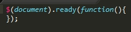
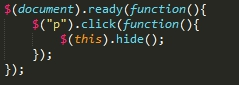
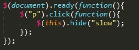

jQuery是一個小而巧且富有特色的JavaScript的函式庫，藉由一些能在眾多瀏覽器而且容易使用的應用程式設計界面，它能使編輯HTML更為方便，像是元素走訪、事件處理、動畫或是非同步呼叫，也因為jQuery眾多的功能性與擴展性，影響了眾多的工程師架構網頁的方式
| jQuery 選擇器 | 說明 |
|---|---|
| $("p") | 選取 < p > 標籤 |
| $("h1") | 選取 < h1 > 標籤 |
| $(".class") | 選取帶有類別 class="class" 的標籤 |
| $("#id") | 選取帶有識別 id="id" 的標籤 |
| $("p#id") | 選取帶有識別 id="id" 的 < p > 標籤 |
| $("p:nth-of-type(2)") | 選取第2個 < p > 標籤 |
| $("ul li:nth-child(1)") | 選取子節點特定位置元素 |
| $("tr:even") | 選取表格內偶數列元素 |
| $("*") | 選取所有標籤 |
| 滑鼠 | 鍵盤 | 輸入 | 文件/視窗 |
|---|---|---|---|
| click | keypress | submit | load |
| dblclick | keydown | change | resize |
| mouseenter | keyup | focus | scroll |
| mouseleave | blur | unload | |
| hover |
選取任何元素之前，必須先選擇文件document以示選取的元素確實在html的文件內且已就緒ready
單純選擇< p >標籤
 現在按按看上面的文字，若是消失hide了，表示你點到< p >標籤摟，兩者的差別就在於消失的快慢slow